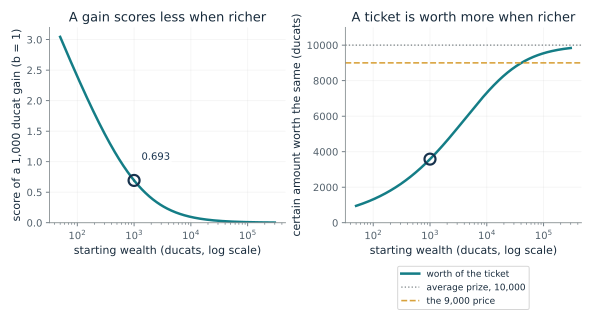
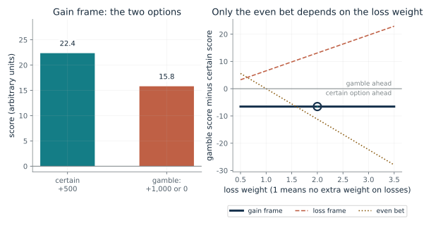
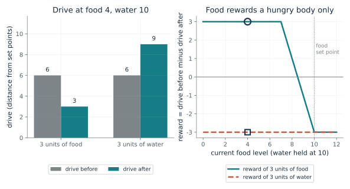
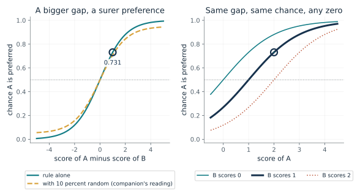
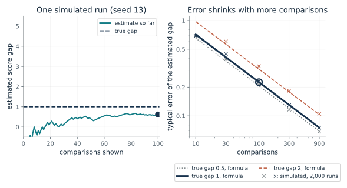

Why does the same gain count for less when you already have more?
From Chapter 13, Wealth changes the value of a gain
A gain of 1,000 ducats scores differently at different starting wealth, and so does a ticket that pays 0 or 20,000. How does the logarithm make the same ticket worth more to some holders?
Taking each small gain as worth less in proportion to what you hold adds up to a logarithm of the wealth ratio. The same 1,000 ducats is a doubling at 1,000 and a one percent rise at 100,000. For the ticket, averaging the scores of the two final wealth amounts and finding the certain amount that scores the same gives a worth to the holder that climbs toward the 10,000 average prize as wealth grows. That is the holder's side (what to accept to sell); a buyer's limit is lower, because paying also reduces wealth.
Predict first: At 1,000 ducats a 1,000 ducat gain scores 0.693. Predict how it scores at 100,000 ducats, and at what wealth the ticket is worth exactly 9,000, before moving the slider.

Starting wealth (ducats): 1000
What happens: At 100,000 ducats the same gain scores 0.00995, about 70 times less than at 1,000. The ticket is worth about 9,540 there. It is worth exactly 9,000 at 40,500 ducats: a holder with less would sell at 9,000, and a holder with more would keep the ticket. Whether someone without the ticket would buy at 9,000 is a separate calculation that, under the same rule, needs wealth of about 49,500 or more. The worth figures are this companion's computation from the chapter's rule, not the book's numbers.
Starting from 1,000 ducats, a 1,000 ducat gain scores 0.693. The ticket, which pays 0 or 20,000 with equal chances, is worth 3583 certain ducats to this holder, below 9,000: this holder would sell at 9,000.
- Score of a 1,000 ducat gain
- 0.693
- Wealth after the gain (ducats)
- 2000
- Worth of the ticket (ducats)
- 3583
- Worth against 9,000
- below 9,000: this holder would sell at 9,000
A program given outcomes and a curve will price one ticket differently for two people. The price comes from the chosen curve and the wealth supplied, not from the outcome, so both must be checked against the person.
Bernoulli argued, as the chapter reports it, that a poor holder could sell at 9,000 without error and a rich one would be unwise to refuse to buy. It was an argument, and nothing here says a brain computes a logarithm.
A program supplied with a wealth figure and this curve computes the worth directly. The designer chose what it counts and how sharply the curve bends; the calculation does not show the curve fits a given person.
Show the calculation
Gain score = ln((1,000 + 1,000)/1,000) = 0.693. Ticket worth p solves ln(w + p) = 0.5 ln(w) + 0.5 ln(w + 20,000), so p = sqrt(w (w + 20,000)) - w = 3583.
The equations and symbols
- x_0, x
- wealth before and after the gain, both above zero
- y
- the score of the gain, in arbitrary units (b = 1 here)
- w
- the holder's wealth, not counting the ticket
- p
- the certain amount that scores the same as holding the ticket
A gain's worth is inversely proportional to existing wealth, which gives the logarithm. Both wealth amounts must be above zero. The score is not a measurement of anyone's happiness, and other curves predict the same direction.
Check your understanding: A holder has 1,000 ducats. What certain amount is the ticket worth under the rule, and is 9,000 above or below it?
Book source: Chapter 13, Wealth changes the value of a gain. Illustration C13-D01. Formula. Book formula (Bernoulli's rule as the chapter presents it). The 1,000 and 100,000 ducat wealth figures are the chapter's constructed examples. The ticket worth p is this companion's computation from the chapter's rule, using the chapter's ticket (0 or 20,000, equal chances) and the 9,000 price; the chapter body states neither the formula for p nor the 40,500 ducat figure (its footnote on Modesti mentions them as the book's own arithmetic, which the body no longer contains), and Bernoulli's argument was not a recorded sale. The worth is the value to a current holder; whether someone without the ticket should buy at 9,000 is a separate calculation, also this companion's.
Which part of the model makes a loss frame choose the gamble?
From Chapter 13, Measure the change
Two groups face the same final amounts but one hears gains and the other losses. A curve measured from a reference point can reproduce the majority choices, and the question is which of its features does the work.
Measured from the gift, the extra 500 is a gain for one group and a loss for the other. Square roots bend both sides, so a sure thing beats a gamble among gains and a gamble beats a sure thing among losses. Making losses count more multiplies every loss score by the same number, so it does not reorder two loss options, but it makes an even chance of gaining or losing the same amount look bad.
Predict first: Set the loss weight to 1 in the loss frame. Predict whether the model still prefers the gamble, then try the even bet and ask what the weight does there.

Problem: gain frame · Loss weight: 2
What happens: With no extra weight on losses the certain loss still scores about -22.4 against -15.8 for the gamble, so the gamble still wins. Raising the weight scales both loss scores by the same positive number and cannot reverse their order. The weight matters only in the even bet.
With loss weight 2, the certain option scores 22.4 and the gamble 15.8, so the model picks the certain option. The curve is the chapter's constructed illustration, not fitted to the respondents.
- Score of the certain option
- 22.4
- Score of the gamble
- 15.8
- Model picks
- the certain option
- Majority in the study
- certain gain (84 percent of 70 chose it)
A machine that records only final amounts has already lost the framing. Giving it a reference point restores the distinction, and checking which feature produces which effect keeps a designer from crediting the wrong one.
The 1979 study measured hypothetical choices of different groups. It did not identify neurons computing this curve, and a program with no variable for fear or relief still produces the gain and loss pattern.
The machine implements the arithmetic exactly. That shows a limited computational capability, not that emotion is irrelevant to people or that the machine experiences the scores.
Show the calculation
sqrt(500) versus half of sqrt(1,000): 22.4 against 15.8. Scores are averaged with the stated chances, with no probability weighting.
The equations and symbols
- x
- the change from the reference point, in pounds (positive for a gain, negative for a loss)
- v(x)
- the score, in arbitrary units
- lambda
- the loss weight: 2 in the chapter's curve, and 1 means no extra weight on losses
A reference point (the gift) and a curve that bends the same way on both sides. The study measured stated choices of different people, not neurons or one person reversing. Matching the direction of the majority does not predict the percentages or explain how people choose their reference points.
Check your understanding: In the even bet, at what loss weight does the model score the gamble at exactly zero, the same as the certain change of zero?
Book source: Chapter 13, Measure the change. Illustration C13-D02. Constructed example. The curve is the chapter's own constructed illustration, chosen for easy arithmetic and not estimated from the respondents. The choice problems are the 1979 hypothetical questions: 70 respondents with a gift of 1,000 pounds (84 percent chose the certain gain) and 68 with a gift of 2,000 (31 percent chose the certain loss). The even bet is the chapter's own illustration and was not put to respondents. Scores average outcomes by their chances, with no probability weighting.
How can the same food be worth something, nothing, or less than nothing?
From Chapter 13, Need changes the goal
A model body scores an outcome by how far it moves the body toward its set points. What does three units of food score when the body is hungry, full, or thirsty?
Drive adds up how far each need is from its set point. An outcome is scored by how much it shrinks that total. Food that fills a gap shrinks it, food added to a full body opens a new gap and grows it, and food does nothing to a gap in water. So reward depends on what the body lacks now.
Predict first: Predict what the model scores for 3 units of food at food 10 and water 10, and whether water scores higher when water is at 4.

Current food level: 4 · Current water level: 10 · Drive form (1: n = m = 1; 2: n = 3, m = 2): 1
What happens: A model body at both set points scores 3 units of food at -3 (drive goes from 0 to 3). A hungry one (food 4, water 10) scores it at +3. The same outcome has opposite scores when the starting state differs.
At food 4 and water 10 the model body's drive is 6. Three units of food score 3 and three units of water -3, so food scores higher. This is a constructed model, not a fit to any animal.
- Drive before
- 6
- Reward of 3 units of food
- 3
- Reward of 3 units of water
- -3
- Higher reward
- food
A machine that gives food a fixed score cannot represent a changing need through that score alone. Supplying a state description and letting the score depend on it is one way to do so.
Rats that had learned a Y-maze with food on one side and water on the other tended to choose the side that fit their test need. The only source is a 1940 conference abstract with no counts, and the model paper did not test that maze, so this is a resemblance in direction, not a fit.
The equations are a specification of a designed system: given levels and set points they return a score. A designed system that scores departures from a target does not establish that a brain uses this formula.
Show the calculation
Set points 10 and 10; n = m = 1, drive is the sum of the gaps. Drive now = 6. After food: (7, 10) gives 3, reward 6 - 3 = 3. After water: (4, 13) gives 9, reward -3.
The equations and symbols
- h_i^*, h_i
- set point and current level of need i (food and water here, set points 10)
- D
- drive: the combined gap from the set points
- n, m
- positive numbers that set how gaps combine; n = m = 1 is the chapter's illustration
- K_t
- the change an outcome causes (3 units of food, or of water)
- r
- reward: drive before minus drive after
Two needs, a fixed set point for each, and a reward defined as reduction in drive. Overshooting a set point can give a negative score. The model specifies internal levels; it does not say how a body senses or regulates its own state.
Check your understanding: A model body has food 10 and water 4, set points 10, with n = m = 1. What do 3 units of food and 3 units of water score?
Book source: Chapter 13, Need changes the goal. Illustration C13-D03. Model. Book formula (the Keramati and Gutkin homeostatic reward as the chapter presents it). The set points of 10 and the 3-unit outcome follow the chapter's constructed example, whose hungry case (food 4, water 10) gives drive 6 to 3 and reward 3, and whose full case gives drive 0 to 3 and reward -3. The second drive form (n = 3, m = 2) is the paper's regime n > m > 1, evaluated here by this companion; the chapter's n = m = 1 relaxes that restriction.
How do two scores become a predicted preference?
From Chapter 13, A machine can learn from human comparisons
A model gives clip A a score of 2 and clip B a score of 1. What chance does it give that a person prefers A, and what happens if every score shifts?
Raising both scores by the same number multiplies the top and bottom of the fraction by the same factor, so it cancels. A gap of 1 gives 73 percent for the higher option, a gap of 3 gives 95 percent, and no gap gives one half. Random responses mix in a coin flip and keep the chance away from 0 and 1.
Predict first: Predict the chance A is preferred when the scores are 2 and 1, then predict it when both scores are 12 and 11.

Score of A: 2 · Score of B: 1 · Share of random responses: 0
What happens: The chance is e^2/(e^2 + e^1), about 0.731, and the right panel shows the same chance whenever the gap is 1, whatever the zero. Turning on 10 percent random responses (the companion's reading: a fair coin on one response in ten) pulls it toward 0.5, to about 0.708.
Scores 2 and 1 give a gap of 1 and a predicted chance of 0.731 that A is preferred. Adding the same number to both scores leaves the chance at 0.731, because only the gap matters.
- Score gap (A minus B)
- 1
- Chance A is preferred
- 0.731
- Chance B is preferred
- 0.269
- Same with 5 added to both scores
- 0.731
A reward learned from comparisons is determined only up to a shift. Knowing that tells a designer what the numbers can and cannot mean.
A person who is asked which of two clips is better produces an answer. The rule predicts the pattern of answers, not how the person's brain reaches them.
A reward model uses scores for clips and this rule to score its own fit to the comparisons it receives; the agent is then trained against the learned scores.
Show the calculation
Without random responses: e^2 / (e^2 + e^1) = 0.731. With a share 0 of fair-coin responses (the companion's reading of the chapter's 10 percent remark): (1 - 0) x 0.731 + 0 x 0.5 = 0.731.
The equations and symbols
- r_a, r_b
- the model's scores for options a and b
- e
- the constant 2.718...
- P(a > b)
- the predicted chance that a person prefers a
The model's scores summarize which option a person tends to choose. The rule is a model of answers, not an established account of how the brain makes them.
Check your understanding: Scores of 3 and 0. What chance does the rule give that A is preferred, and what is it with 10 percent random responses?
Book source: Chapter 13, A machine can learn from human comparisons. Illustration C13-D04. Formula. Book formula with the chapter's constructed scores (2 and 1, not scores of any hopper clip). The 10 percent random-response option follows the chapter's remark that the training method allowed a 10 percent chance of a random response; reading that as a fair coin, so P is 0.9 times the rule plus 0.05, is this companion's, not the chapter's formula.
How much comparing does it take to recover a score gap?
From Chapter 13, A machine can learn from human comparisons
Learning runs the other way from the preference rule: given a person's comparisons, the system adjusts scores to account for them. How close does a score gap get as comparisons accumulate?
A single run can miss by more than the typical error; the one run in the figure is one draw, not an average. The share of comparisons that favor A is the data, and the gap that best explains that share is the log of its odds. Few comparisons leave the share noisy, and if all go one way the best gap is infinite, so the estimate is undefined. More comparisons narrow the spread, and larger gaps are easier to see because the shares are further from one half.
Predict first: Predict whether 10 comparisons recover a gap of 1 as well as 100 do, and how much 900 improve on 100.

True score gap: 1 · Comparisons: 100
What happens: With 100 comparisons and a true gap of 1 the typical error is about 0.23. Nine times the comparisons cut it by a factor of 3, so 900 comparisons leave an error of about 0.075. The single run drawn here is one sample: it can miss by more than the typical error.
After 100 simulated comparisons the preferred answer won 65, giving an estimated gap of 0.619 against a true gap of 1. The formula puts the typical error at 0.226; this is a simulation with a made-up true gap, not a measurement.
- Share preferring A (this run)
- 0.65
- Estimated score gap
- 0.619
- True score gap
- 1
- Typical error (formula)
- 0.226
A person can judge examples without assigning every clip a number, and the machine can use those judgments. But how many are needed depends on how large the difference is, and the learned scores say nothing beyond the person's answers.
A person supplies the comparisons. The simulation has no person, only a coin with a chosen bias, so it says nothing about how people judge.
The estimate is a computation on the comparisons received. A system that matches a person's comparisons has learned a score for their answers, which does not show that it understands or experiences the goal.
Show the calculation
Estimated gap = ln(f / (1 - f)) with f = 65/100 = 0.65. Typical error = 1/sqrt(n p (1 - p)) with p = 0.731, n = 100: 0.226. Repeating 2000 runs gave an rms error of 0.23. This one run missed the true gap by 0.381, 1.69 times the typical error; a single run can miss by more than the typical error.
The equations and symbols
- g-hat
- the estimated score gap between two options
- f
- the share of the n comparisons in which the first option was preferred
- p
- the true chance the first option is preferred, from the rule in the previous demonstration
- n
- the number of comparisons
One pair of options, independent comparisons, a fixed true gap and no random responses or mislabeling. A learned score can fail on behavior unlike what the person evaluated, which this demonstration does not test.
Check your understanding: The true gap is 2, so A is preferred with chance 0.881. About how large is the typical error after 100 comparisons?
Book source: Chapter 13, A machine can learn from human comparisons. Illustration C13-D05. Simulation. A seeded simulation of this companion's, with a made-up true gap (0.5, 1 or 2) and the rule of the previous demonstration. The estimate is the maximum likelihood gap for one pair, and the error formula is the standard large-sample one; neither is stated in the chapter. It is a simulation, not a measurement, and not the hopper study, which reported that 900 queries in under an hour taught a backflip by training a reward model with a neural network on clips.
Mathematical illustrations use the book's formulas with disclosed small examples. Each interactive choice shows a result computed from the same calculations as the chapter notebook. A simulation is not a measurement, and for a brain the mathematics is a model: a picture illustrates a result, and the assumptions determine its scope. Review copy, brain-computer partnership revision of 1 november 2026.